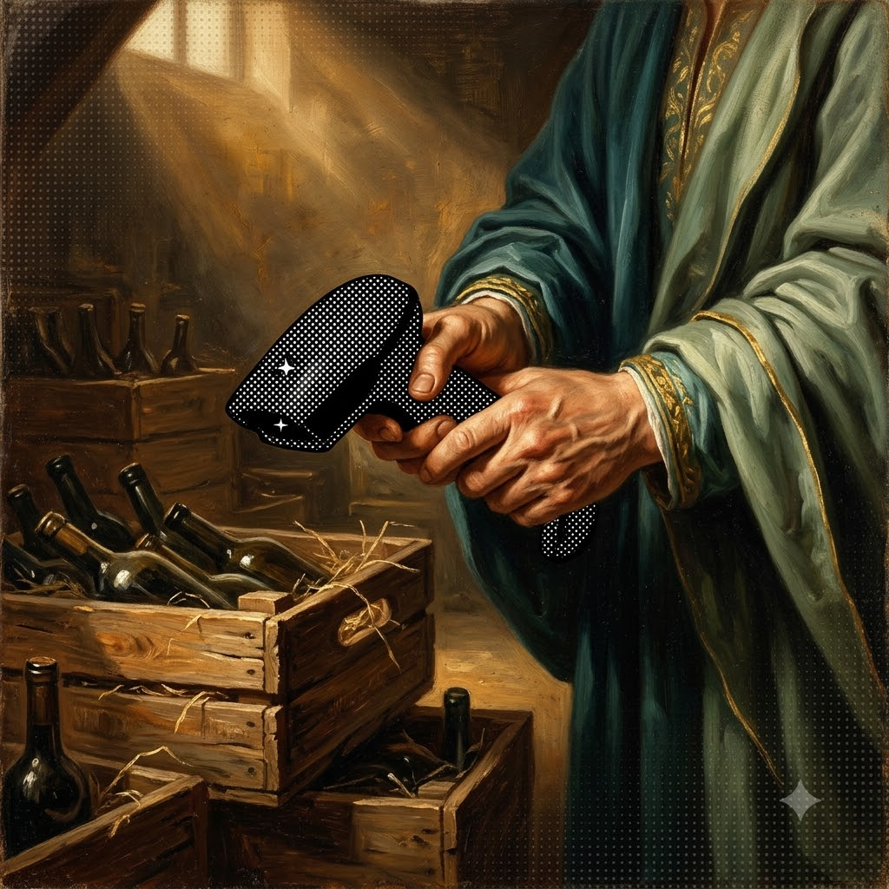
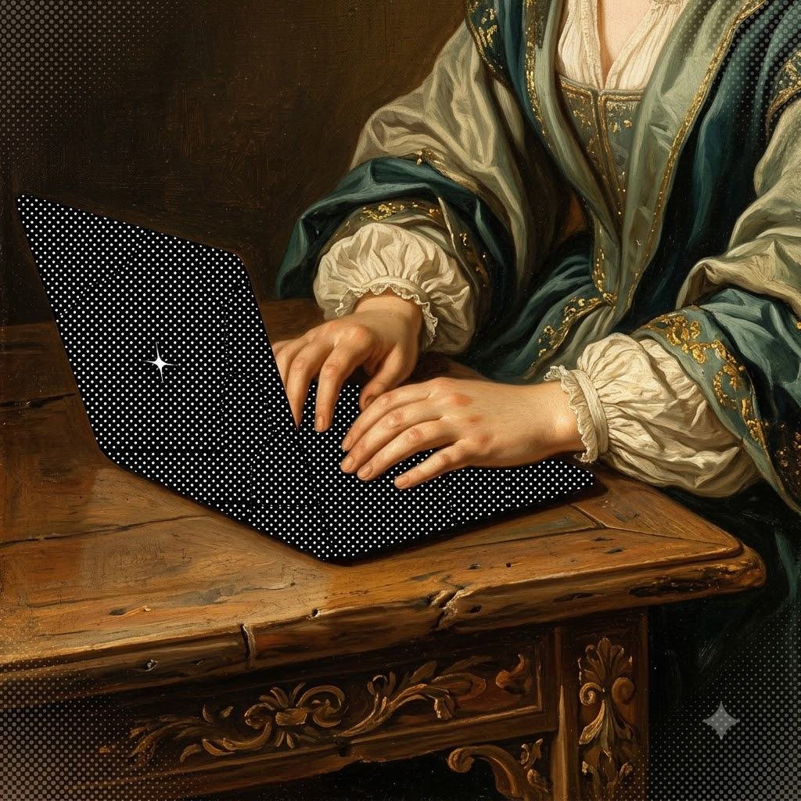
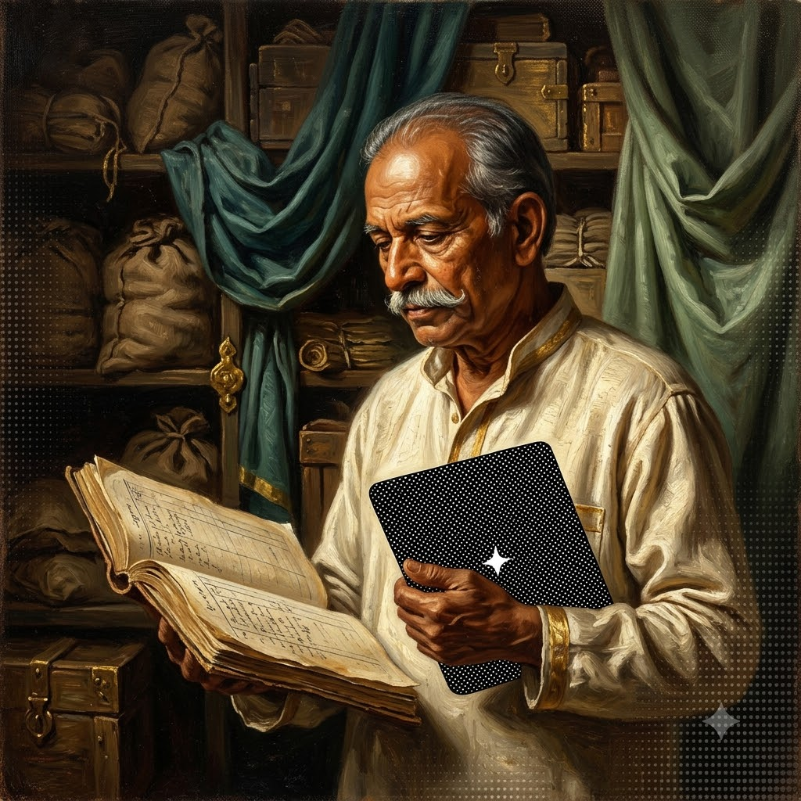
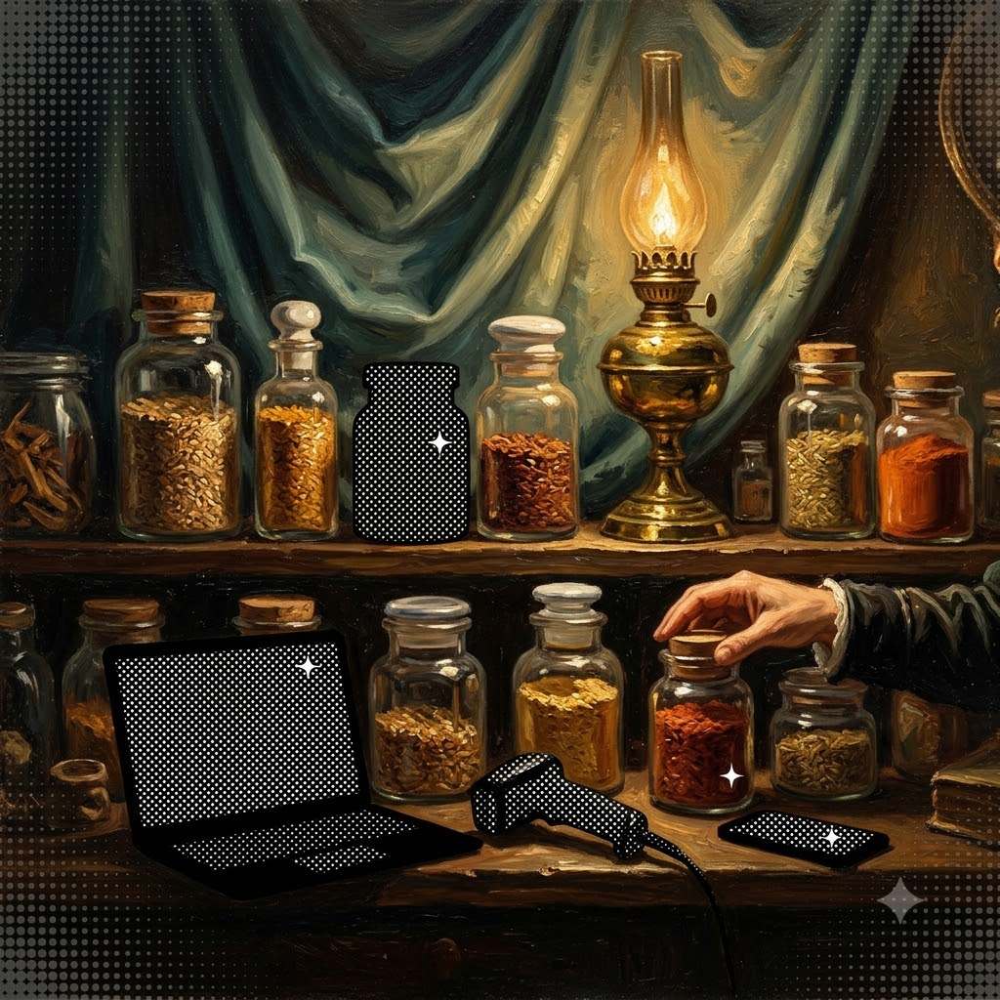
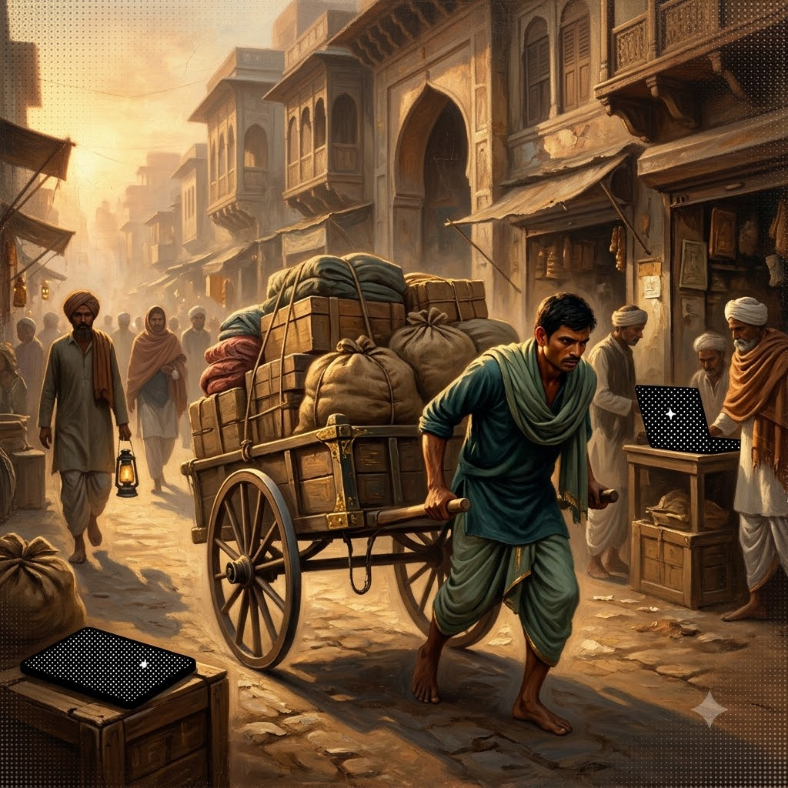
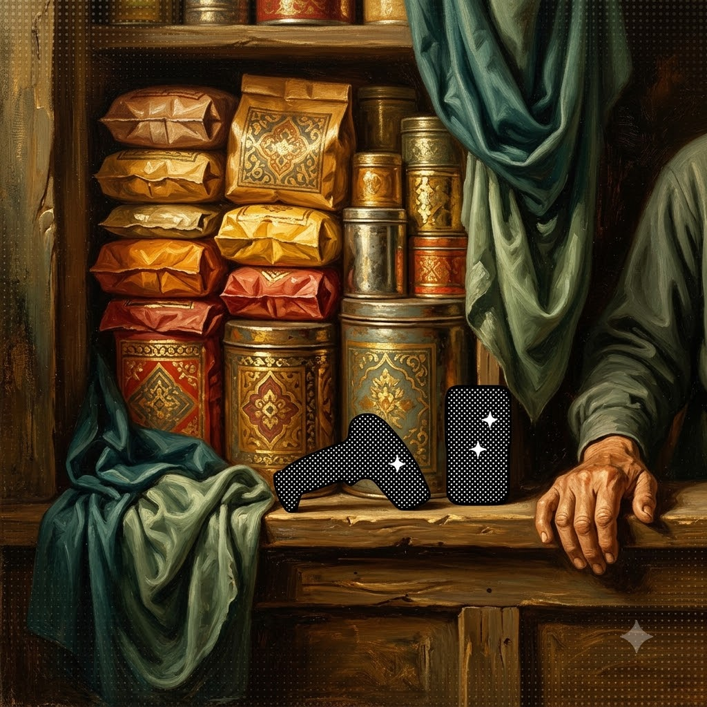
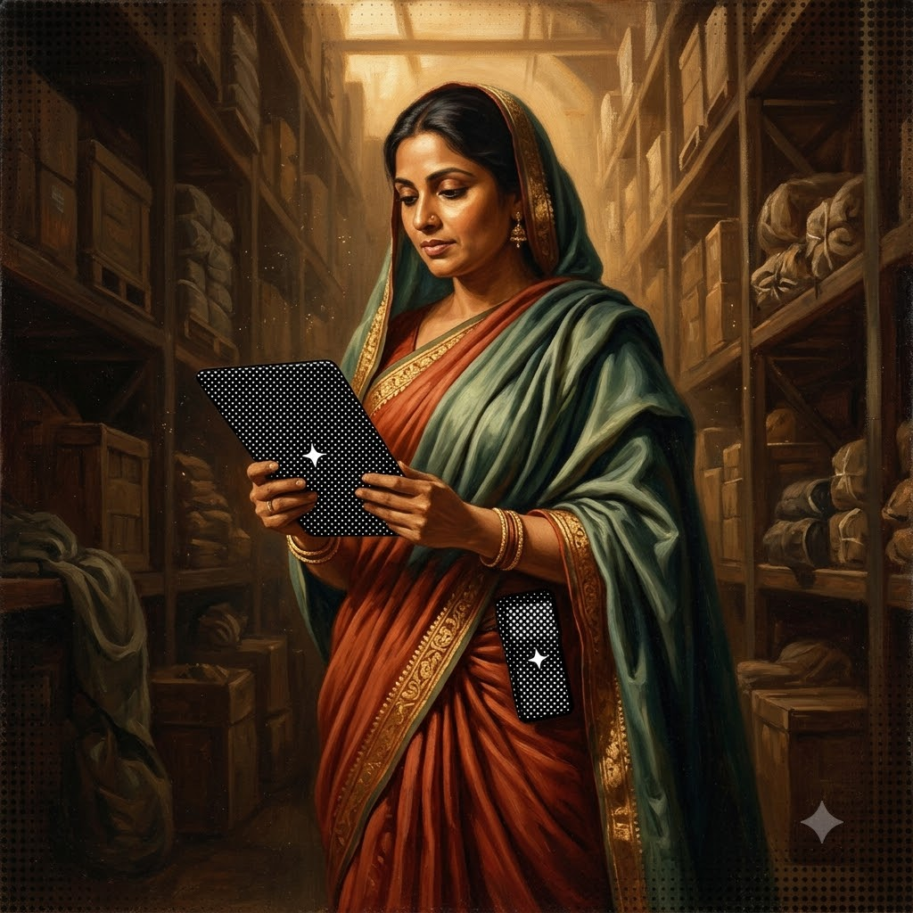
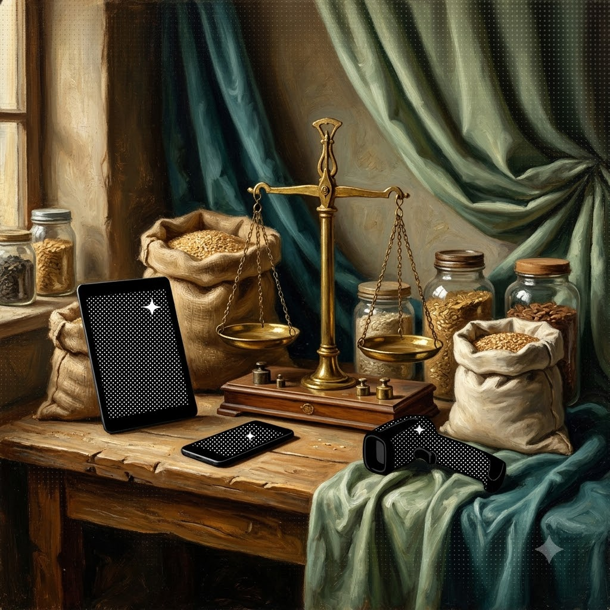
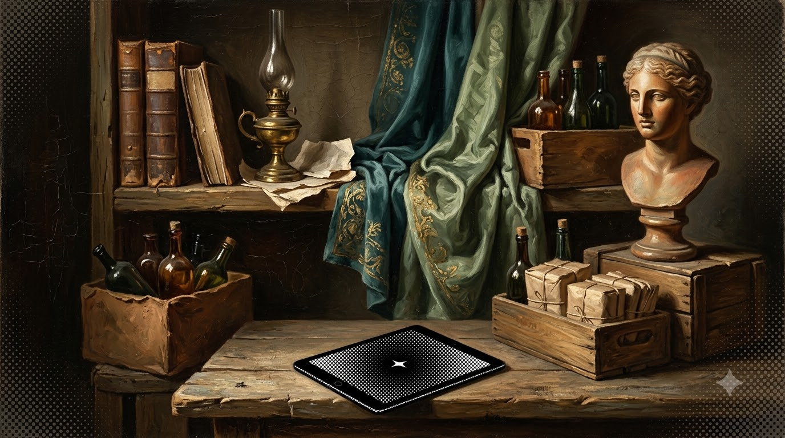
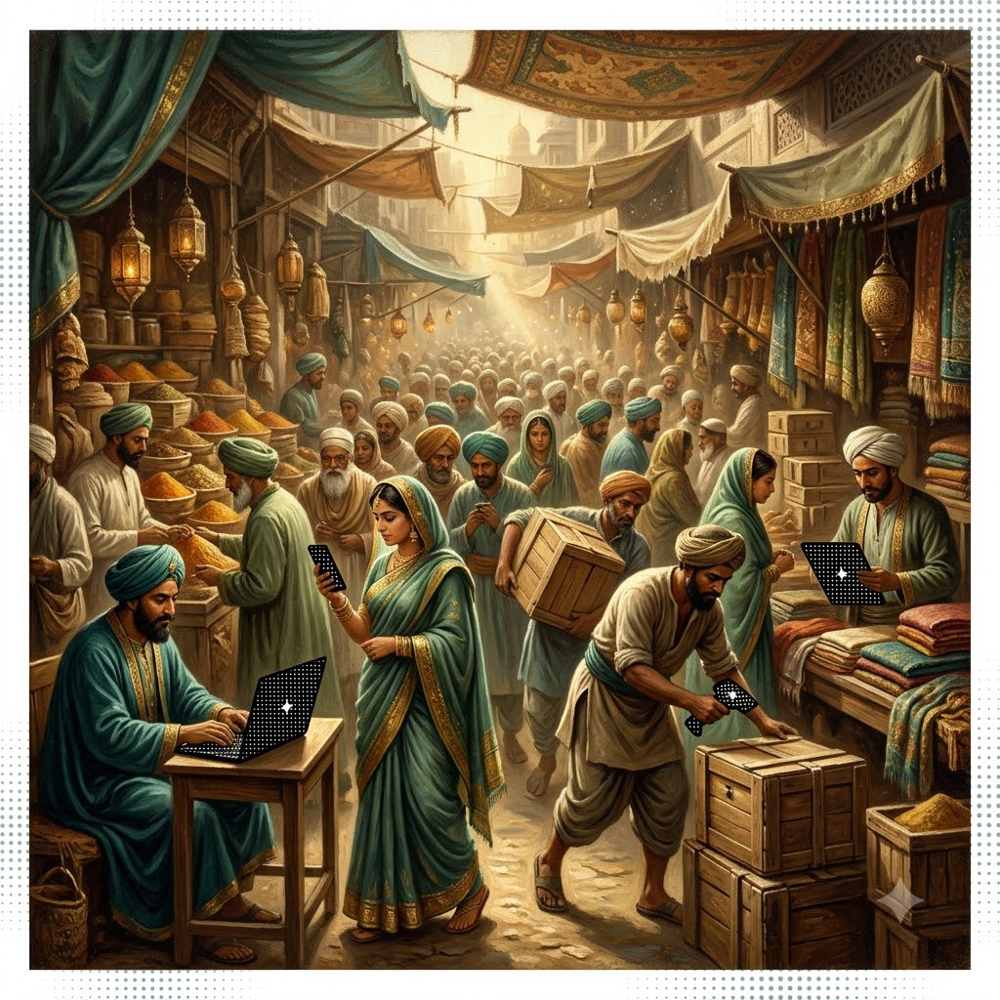

Stock
that
arrives
early


The decision engine for FMCG distributors — it sees the stockout before the shelf does. Each territory replayed, balanced, and secured before dawn.
Open the dashboardWe build the foresight layer for FMCG distribution, helping distributors act on tomorrow's demand the way they can only see yesterday's today.
A 14-day demand forecast for every outlet–SKU — recent sales, day-of-week rhythm, festival calendar, trend. Every factor shown; never a black box.
Every position scored each morning: days of cover, probability of stocking out, expiry exposure — ranked by rupees at risk, worst first.
For every at-risk shelf, the cheapest safe source — solved as an optimisation, not a guess. A source never drops below its own reorder point.
Festival spike, flat week, demand drop, expiry wave — replay the territory three ways and watch doing nothing lose, in rupees.










DistriSense replays a 600-position territory under stress, three ways — doing nothing, the weekly manual review, and the daily decision loop.
Distributors know their territory by feel. DistriSense gives that feel a forecast: expert judgment, pointed at the day after tomorrow instead of the week behind.
See the queue your distributor will face tomorrow morning — and clear it today.
Open the dashboard